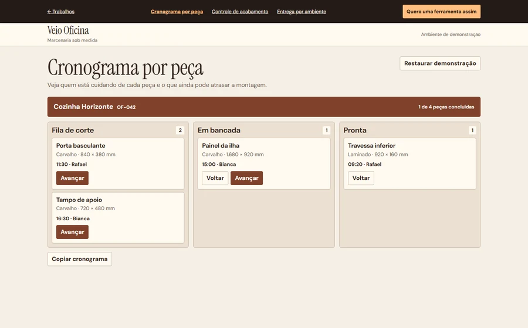
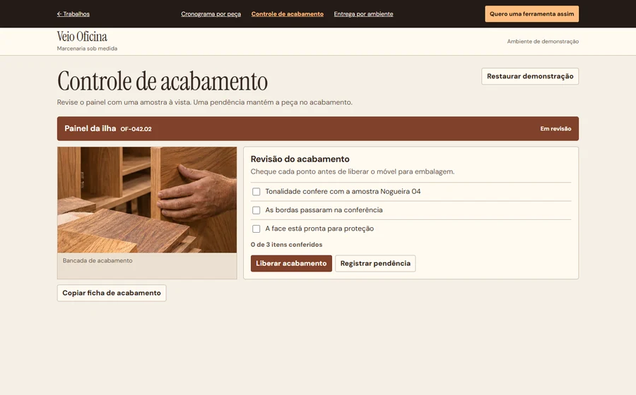
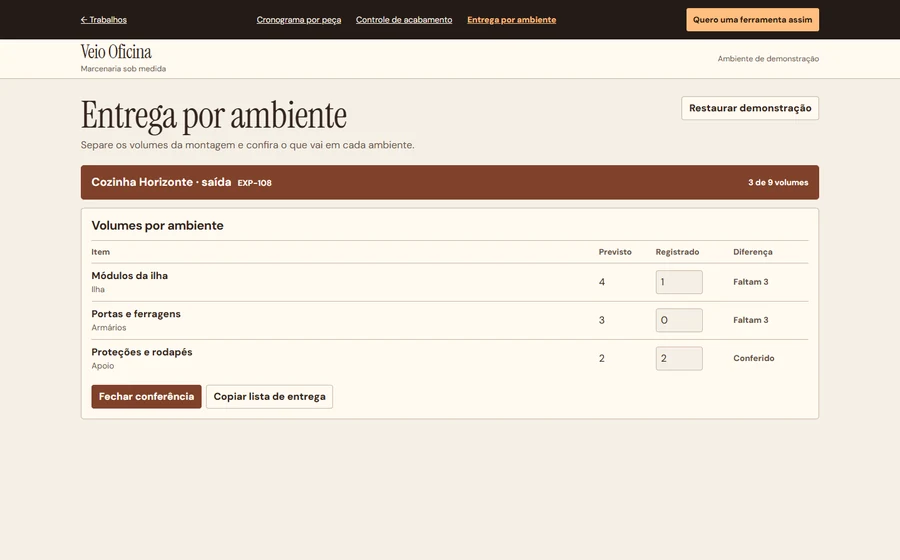

Veio Oficina
Acompanhe o móvel da oficina até a entrega. Escolha uma das três experiências para testar o fluxo.

Cronograma por peça
Veja quem está cuidando de cada peça e o que ainda pode atrasar a montagem.

Controle de acabamento
Revise o painel com uma amostra à vista. Uma pendência mantém a peça no acabamento.

Entrega por ambiente
Separe os volumes da montagem e confira o que vai em cada ambiente.